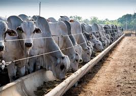

Nossa empresa atua na área de notícias sobre pecuária, levando informações importantes para produtores, profissionais do agronegócio e pessoas interessadas no setor. Nosso objetivo é manter o público sempre atualizado sobre o mercado pecuário, novas tecnologias, produção e tendências do campo.
Iniciamos nossas atividades há 22 anos, por meio de jornais impressos, onde construímos nossa credibilidade e conquistamos leitores ao longo do tempo. Durante esse período, sempre buscamos levar informações confiáveis e relevantes para o setor agropecuário.

Com o avanço da tecnologia e da comunicação digital, decidimos expandir nosso trabalho para a internet. Agora, por meio do nosso site, buscamos alcançar um público ainda maior, levando notícias de forma rápida, acessível e confiável.
Além das notícias sobre pecuária, nosso site também contará com uma página de vagas de emprego, com o objetivo de ajudar profissionais do setor agropecuário a encontrar novas oportunidades de trabalho e conectar empresas a novos talentos.
Nosso compromisso continua sendo informar com responsabilidade e contribuir para o crescimento e desenvolvimento da pecuária.